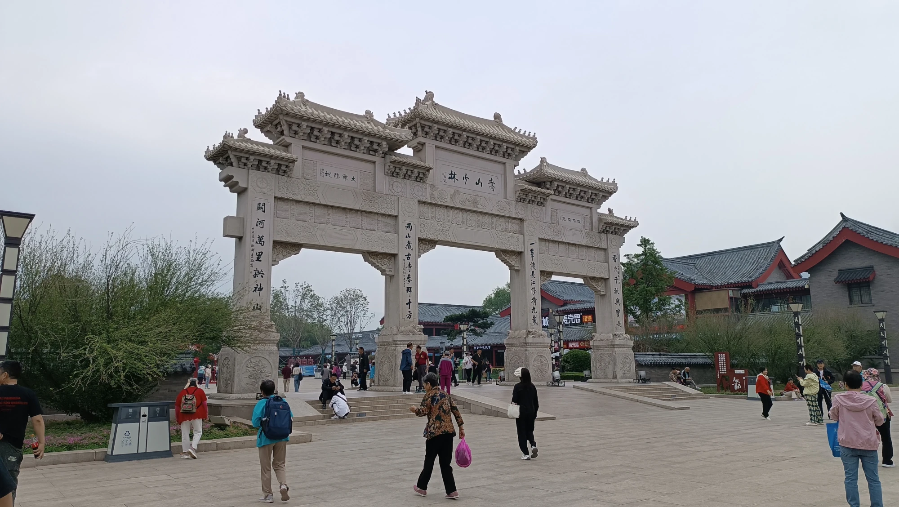
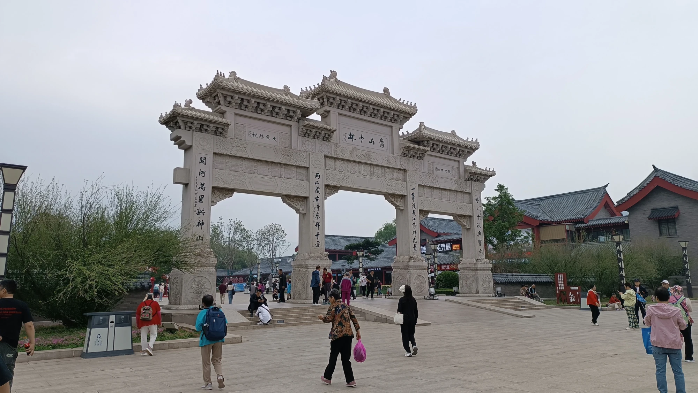

To nejlepší z Číny
Šanghaj, Xi'An, Luoyang, Shaolin, Peking
Tento článek píšu jen den po našem návratu z Číny.
V květnu tam teploty atakovaly čtyřicítku. Pršelo nám jen jeden jediný den.
Vyrazily jsme s cestovní kanceláří CK SEN, která se spojila se slovenskou CK BUBO. Cestovka za nás vyřídila víza, pojištění, a ještě jsme dostaly trička a ponožky s logem jako dárek.
Polopenze, ubytování ve čtyřech hotelech ve čtyřech různých městech a jedno spaní ve vlaku – to byl pro mě obrovský zážitek. Níže najdete seznam všech míst, která jsme navštívili.
Let z Vídně do Pekingu trval něco málo přes 9 hodin se společností Air China. V ceně bylo pití a dva chody čínského jídla, takže ještě před přistáním jsme měli možnost ochutnat jejich kuchyni.
Z Pekingu jsme pak přeletěli do Šanghaje, kde začala naše velká cesta napříč Čínou.
Během zájezdu jsme se spojili se skupinou z Hongkongu, takže nás nakonec bylo asi 40 (menší skupina by byla určitě pohodlnější, ale to už musí vyřešit cestovka).
Naštěstí jsme měli skvělou mladou delegátku Terezu, která si se vším poradila. Překládala nám, byla neustále k dispozici, vedla nás i mimo běžná turistická místa – kam bychom se sami určitě nedostali.
V každém městě jsme měli k dispozici místní čínské průvodce, kteří mluvili „čínskou“ angličtinou, takže opět opěvuji naši delegátku, že jim rozuměla, a hlavně – dokázala to celé uřídit.
Docela mě překvapilo, kolik starších lidí se zájezdu účastnilo. Nečekala jsem, že jich bude tolik – ale po pár rozhovorech mi to začalo dávat smysl. Měli prostě čas a peníze.
Čína: Komunistická země jiných mravů, která funguje
Bezpečnost
Na každém rohu budovy je alespoň jedna kamera, ale nikdo si vás tam netroufne okrást. Bezpečnost je tu opravdu vysoká, zejména ve městech – a to nejen díky přítomnosti fyzické policie, ale i kvůli rozsáhlému kamerovému systému propojenému s umělou inteligencí. Sledování se týká pohybu, obličejů, poznávacích značek i chování obyvatel. Přestože se za krádeže dnes ruce nesekají, tresty za drobné delikty bývají velmi přísné a rychlé, včetně zadržení bez soudu.
Zaujalo mě, proč na některých semaforech bliká jasné bílé světlo přímo na auta. Zjistila jsem, že světlo totiž aktivuje kamery, které snímají SPZ vozidel a kontrolují, zda má řidič zaplacené povinné pojištění a splněné další náležitosti. Zároveň kamery sledují i samotné řidiče – například jestli během jízdy netelefonují nebo neporušují jiná pravidla.
Na každé větší křižovatce hlídkuje policista. Stejně tak jsou přítomní i na každé stanici metra – vybaveni dlouhými tyčemi, kterými pomáhají nacpat lidi do vagónů během špičky. Vstup do metra zahrnuje kontrolu zavazadel (rentgen), osobní prohlídky a často i kontrolu identity. Bezpečnostní kontroly jsou běžné i u vstupů do turistických atrakcí, nádraží, obchodních center a někdy i obytných čtvrtí. Například při vstupu na náměstí Nebeského klidu se běžně předkládá pas, občas i s dotazem, proč tam jdete. Míra ostražitosti vůči cizincům je zde neporovnatelná s Evropou.
Občas vás může na ulici zastavit policie a požádat o pas a doklad totožnosti. Pokud ho nemáte u sebe, hrozí vám minimálně zdržení – a vzhledem k tomu, že většina policistů nemluví anglicky, dorozumět se může být obtížné. Použití překladače na telefonu je často nutností. Z tohoto důvodu se cizincům doporučuje mít pas nebo kopii pasu vždy u sebe.
Mlčení
Jedna z věcí, které si člověk v Číně rychle všimne, je naprostá zdrženlivost lidí při hovorech o politice. Když padne zmínka o vládě, prezidentovi nebo demonstracích, nastává ticho – často doslova. Místní se politickým tématům vyhýbají, a to nejen z opatrnosti, ale i ze zvyku. Cenzura a dohled jsou všudypřítomné, takže se vytratila ochota diskutovat o čemkoli, co by mohlo být vnímáno jako citlivé. Pro nás může být takové ticho zneklidňující, ale v jejich prostředí jde o způsob přežití.
Modernizace
Ačkoliv je Čína buddhistickou zemí, duchovní tradice se tu s moderním světem prolínají zvláštním způsobem. Chrámy a kláštery tu stojí vedle výškových budov, a lidé s telefonem v ruce zapalují vonné tyčinky. Je to fascinující kontrast minulosti a přítomnosti, který si člověk uvědomí až na místě.
Často jsem měla pocit, že pro Číňany je jednodušší starou památku zbourat a postavit její „novou“ verzi. Třeba i repliku, jen modernější, lesklejší, líbivější. Je to škoda. Vypadá to jako nedostatek úcty k historii, ale ve skutečnosti v tom často hraje roli praktičnost, ekonomika a touha ukázat moderní tvář země. Pro ně je důležitější, že se místo zachová alespoň symbolicky – i když v úplně nové podobě.
Čistota
Jedna z věcí, které mě opravdu překvapily, byla čistota ulic. Prakticky kdekoliv – ať už v rušném centru nebo v parcích – bylo čisto a uklizeno. Často jsme potkávali pracovníky v uniformách s košťaty, jak pečlivě zametají chodníky, sbírají i jednotlivé listy nebo smetí kolem záhonů.
Záchody jsou dostupné opravdu všude a zdarma – ve městech i na vesnicích, na nádražích, v parcích i u historických památek. Sice jde často o turecký styl (díra v zemi), ale čistota se zlepšuje, hlavně v turistických oblastech. Toaletní papír si ale většinou musíte nosit s sebou.
Doprava
Co mě v Číně taky zaujalo, je velké množství elektromobilů a elektrických skútrů. Ulice jsou díky tomu tišší a vzduch o něco čistší – alespoň v porovnání s očekáváním. Vláda totiž podporuje elektromobilitu pomocí různých úlev a dotací – například při registraci vozu nebo v podobě daňových zvýhodnění. Elektrické vozy navíc často snáze získají SPZ.
SPZ (registrační značky) se ve velkých městech vyhrávají v loterii – čekat můžete i rok. Bez ní nesmíte s autem jezdit, i když ho vlastníte. Tento systém slouží k omezení počtu aut. Lidé proto často volí skútry, elektrokola nebo klasická kola.
Bydlení
Prodej bytu v Číně je na 70 let, systém funguje od roku 1980 – teprve v příštích letech se ukáže, jak je tento model udržitelný.
Ceny nemovitostí v čínských městech jsou často extrémně vysoké – zejména v Pekingu, Šanghaji nebo Šen-čenu.
Mladí lidé si často nemohou dovolit vlastní bydlení, a proto žijí dlouho s rodiči nebo si berou vysoké hypotéky. Nebo je běžné kupovat malé byty o velikosti garsonky, někdy dokonce jen tzv. kapslové byty. Vlastnit byt je v Číně prestižní záležitost a často podmínka pro sňatek – zejména u mužů.
Bezpečnost je vysoká – u každého vchodu bývá kamera, často i vrátný.
Nezaměstnanost
Nezaměstnanost se oficiálně drží kolem 5 %, což je při 1,4 miliardě obyvatel opravdu nízké číslo. Je však nutné brát ho s rezervou – nezahrnuje migranty z venkova, kteří pracují neoficiálně, bez smluv a sociálního pojištění. V ulicích jsme narazili na pár tzv. „bezdomovců“, ale téměř všichni měli zjevná postižení – například chybějící končetiny nebo slepotu. Žebrota je tu ale spíš výjimečná.
Populace
Zákon o jednom dítěti skončil v roce 2016, protože vláda pochopila, že dramaticky stárne populace a nebude mít kdo vydělávat na důchody. Dnes je povoleno mít i tři děti, ale demografický vývoj se zatím neotočil – mnoho mladých lidí děti mít nechce kvůli nákladům, kariéře nebo stresu.
Digitální technologie
Čína je v čele bezhotovostní ekonomiky – všechno se platí přes QR kódy (Alipay, WeChat Pay), i na tržišti nebo u žebráka. Nepočítej s tím, že zaplatíš fyzickou kartou někde mimo mezinárodní hotel. Platby naší kartou (Visa, Mastercard) je dost zásadní překážka, protože místní digitální platební systém je zcela odlišný od západního, ale stačí stáhnout jednu z jejich appek, kam si tu kartu nahrajete. Ale jinak hotovost berou, sice neochotně a většinou nemaj na vrácení, takže běhaj všude možně, aby si rozměnili.
Cenzura a internet
Internet je silně cenzurovaný – nefunguje Google, Facebook, Instagram, WhatsApp. Lidé používají VPN nebo místní alternativy. Ale detox od sociálních sítí taky neublíží a ještě na to nikdo neumřel.
Společenská kontrola
Systém „sociálních kreditů“ není zatím plošně zavedený, ale v některých regionech testován – hodnotí občany podle chování.
Kultura a zvyky
Lidé plivou na ulici, srkají u jídla (což je normální), nosí pyžama venku. Cizinci jsou často středem pozornosti – fotí si vás nebo na vás koukají. Takže se po většinu času cítíte jako celebrita.
Číňané působí na cizince často jako neomalení – běžně se předbíhají, tlačí se, hlasitě mluví, plivou na zem. Není to z neúcty, ale spíš kulturní norma – důraz na „soutěživost“ už od útlého věku a individualismus v každodenním životě, zvlášť ve městech. Ve skutečnosti jsou ale mnozí lidé velmi vstřícní a ochotní pomoci, když překonáte první kulturní střet.
Ve veřejných parcích fungují „seznamky“ – starší ženy, tzv. dohazovačky, přicházejí s papíry, kde jsou uvedeny informace o jejich dětech či vnoučatech. Pokud dotyčný vlastní byt, stoupá jeho „tržní“ hodnota na manželském trhu.
Ekologie
Obrovské město jako Peking má výrazné problémy se smogem, i když v posledních letech se situace zlepšuje díky regulacím (výsadbou zeleně).
Co mě také zaujalo, byla snaha o ozelenění městského prostoru. Podél silnic a rušných ulic visí truhlíky se zelení a květinami, často zavěšené na zábradlích nebo sloupech. Na první pohled to působí jen jako snaha zpříjemnit prostředí, ale má to i praktický důvod – pomáhají zlepšovat kvalitu ovzduší.
Zdravotnictví
Zdravotnictví je na podobné úrovni jako to naše, zejména ve městech. I zde ale platí, že kvalita péče se výrazně liší mezi městy a venkovem.
Školství
Vzdělávací systém je podobný tomu našemu – 9 let povinné školní docházky se skládá ze 6leté základní a 3leté nižší střední školy. Následuje vyšší střední škola (3 roky), zakončená velmi náročnou maturitou a přípravou na univerzitu. Bakalářské studium trvá obvykle 4 roky.
Na rozdíl od Česka ale děti tráví ve škole prakticky celý den. Odpolední výuka bývá volnější, často formou samostatného studia pod dohledem učitele, a končí obvykle kolem 18. hodiny, někdy i později.
Typický školní den:
- Začátek: 7:00–7:30 (někdy dřív) – nástup, rozcvička, hymna.
- Dopoledne: 4–5 hodin výuky (čínština, matematika, angličtina, přírodní vědy, morálka…).
- Oběd a polední klid: 1,5–2 hodiny – někdy si žáci zdřímnou přímo ve třídě.
- Odpoledne: 3–4 hodiny další výuky nebo řízeného samostudia.
- Večer: Domácí úkoly nebo placené doučování – klidně až do 22 hodin.
Po nástupu do práce má zaměstnanec nárok na 7 dní dovolené ročně, a za každý odpracovaný rok získá další den navíc.
Důchody
Do důchodu ženy odcházejí v 50 letech, pokud pracovaly manuálně, a muži v 55. Ti, kteří pracovali duševně (např. učitelé, úředníci), odcházejí ženy v 55 a muži v 60 letech. Čína už delší dobu zvažuje zvýšení důchodového věku, ale naráží na odpor veřejnosti. Penze jsou navíc nízké, a mnozí starší lidé tak i v důchodu dále pracují – často jako hlídači, uklízečky nebo vrátní.
Kuchyně
Na první pohled to možná nevypadá vábně – maso visící na háku, nudle vařené na ulici, pachy, co tě praští přes nos. Ale pak ochutnáš… a většinu z toho nebudeš chtít přestat jíst.
Pekingská kachna? Zapomeň na křupavou pečínku z trouby – v originále je spíš vařená a jemná, zabalená do tenké placičky s jarní cibulkou a sladkou omáčkou.
Jídla se servírují doprostřed stolu a každý si nabírá, co chce – žádné vlastní porce jako u nás.
Ochutnáš třeba:
- Mapo tofu – pálivý pokrm z tofu a mletého masa
- Xiaolongbao – šťavnaté knedlíčky s vývarem uvnitř
- Kung Pao kuře – sladko-pikantní klasiku
- nebo tě zaskočí kachní jazýčky, slepičí pařáty nebo želví polévka
Připrav se na to, že cukr dávají i do masa a slané může být sladké, ale právě v tom je kouzlo – každé sousto je nová zkušenost. A jestli miluješ nudle a rýži? Tak tady budeš jako doma.
Šanghaj – moderní tvář Číny
Šanghaj je největší čínské město a jedno z nejlidnatějších měst světa – má přes 24 milionů obyvatel. Nachází se na východním pobřeží Číny, u ústí řeky Jang-c’ do Východočínského moře. Je to ekonomické, obchodní a finanční srdce celé země – taková čínská verze New Yorku.
Město je známé svou futuristickou siluetou plnou mrakodrapů., ale zároveň si uchovává historické čtvrti. s tradiční architekturou a evropským vlivem – díky své kolonialní minulosti.
První, co vás při vstupu do Šanghaje zaujme, je obrovské množství opravdu vysokých panelových domů – běžně mají i 25 pater. Téměř pod každým oknem visí klimatizace – tam, kde chybí, byt pravděpodobně nikdo neobývá.
Další věc, která na sebe strhne pozornost, je spletitá síť nadzemních silnic a mostů. Šanghaj se po setmění mění v neonovou pastvu pro oči – doporučuji si dopřát projížďku lodí po řece Huangpu, odkud uvidíte osvětlené panorama města v celé kráse.
Jedním z největších zážitků je také jízda na nejrychlejším komerčně provozovaném vlaku světa – Maglevu. Vlak poháněný magnetickou levitací původně jezdil rychlostí až 431 km/h, dnes „pouze“ 300 km/h. Úsek mezi letištěm a centrem měří 30 km a zvládne ho za přibližně 8 minut. Kvůli vysokým nákladům ale jezdí jen 3× za hodinu a linka se dále nerozšiřuje.
Co dělá Šanghaj výjimečnou:
- The Bund (Pchu-tung vs. Pchu-si) – nábřeží s výhledem na futuristické mrakodrapy i historické budovy v evropském stylu
- Oriental Pearl Tower – slavná televizní věž a symbol města
- Nanjing Road – nejznámější nákupní třída, plná obchodů a světel
- Yu Garden a staré město – jediná klasická čínská zahrada v Šanghaji, pocházející ze 16. století. Spolu s okolním bazarem připomíná atmosféru starého čínského města
- Šanghajské metro – jedno z největších a nejmodernějších na světě
- Shanghai Tower – druhý nejvyšší mrakodrap světa (632 m), se dvěma vyhlídkovými plošinami, restauracemi, obchody, bary i hotelem
- Chrám nefritového Buddhy (Jade Buddha Temple) – aktivní buddhistický chrám proslulý dvěma velkými, nádherně zdobenými sochami z bílého nefritu
- Suzhou Silk Factory – pro milovníky hedvábí ráj na zemi. Uvidíte zde celý životní cyklus bource morušového i zpracování hedvábí od kokonů až po hotové výrobky
Šanghaj působí jako vstupní brána do moderní Číny – kosmopolitní, živá, ale přesto hluboce zakořeněná ve své kultuře.


Xi’an – kolébka čínské civilizace

Xi’an (česky často „Si-an“) je hlavní město provincie Šen-si (Shaanxi) ve střední Číně. Patří mezi nejstarší města v celé zemi – bylo hlavním městem celkem 13 čínských dynastií, včetně slavné dynastie Tchang. Právem se mu přezdívá „východní Řím“.
Město bylo také východním koncem Hedvábné stezky, což z něj činilo důležité centrum obchodu, kultury a náboženství.
Co je v Xi’anu nejznámější:
- Terakotová armáda – největší lákadlo města. Objevena v roce 1974, ukrývá tisíce keramických soch vojáků a koní, kteří měli chránit císaře Čchin Š’-chuang-tiho v posmrtném životě.
- Městské hradby – jedny z nejzachovalejších v Číně, postavené ve 14. století. Dají se obejít pěšky nebo projet na kole.
- Velká mešita – neobvyklá stavba spojující islámské a čínské architektonické prvky, nachází se ve čtvrti Hui, kde žije muslimská menšina.
- Bubenová a zvonová věž, pagoda Velké divoké husy, široké trhy s pouličním jídlem a tradiční atmosféra starého města.
Dnešní Xi’an:
- Má přes 12 milionů obyvatel
- Je směsí moderní metropole a historického města
- Večer se promění v živé centrum s trhy, světly, jídlem a vůněmi, které vás okamžitě přenesou zpátky v čase


Terakotová armáda – 8. div světa?

Této části chci věnovat samostatný odstavec. Měli jsme tu čest, že nás po těchto místech provázel univerzitní historik a archeolog, který se přímo podílel na vykopávkách Terakotové armády. Na tuto chvíli jsem se těšila nejvíc – uvidím na vlastní oči slavnou hliněnou armádu.
Ale musím přiznat, že jsem byla trochu zklamaná. Celé místo působí spíš jako komerční atrakce – obrovské betonové nádvoří plné stánků a prodejců suvenýrů. Samotné vykopávky se dnes nacházejí v klimatizovaných halách a stále zde jsou vojáci, kteří čekají na vyzvednutí ze země nebo opětovné sestavení.
Terakotová armáda je jedním z největších archeologických objevů 20. století a hlavním lákadlem města Xi’an.
Byla objevena v roce 1974 místními farmáři při kopání studny. Nachází se nedaleko mauzolea prvního císaře sjednocené Číny – Čchin Š’-chuang-tiho, který vládl ve 3. století př. n. l.Samotná hrobka císaře však dodnes nebyla otevřena. Důvodem je především snaha o ochranu jejího obsahu, protože současná technologie by zřejmě nedokázala zachovat malby, artefakty ani strukturu v původním stavu. Archeologové také upozorňují na možné nebezpečí – starověké písemné záznamy mluví o pastích a vysoké koncentraci rtuti uvnitř hrobky.
Je to tedy tajemství, které čeká na svůj čas – a možná právě to mu dodává zvláštní kouzlo a respekt.
Proč vznikla?
Císař Čchin Š’-chuang-ti věřil, že bude potřebovat ochranu i v posmrtném životě. Proto nechal vybudovat celou armádu z pálené hlíny (terakoty) – jako strážce svého hrobu.
Zajímavosti:
- Armáda čítá přes 8 000 vojáků, koně, válečné vozy, hudebníky, beamty i generály.
- Každá socha je unikátní – liší se výškou, účesem, brněním i výrazem tváře.
- Sochy jsou v životní velikosti – vojáci měří 175–200 cm.
- Vojáci původně byli barevní, ale barva po odkrytí rychle vybledla – probíhá výzkum, jak ji zachovat.
- Terakotová armáda je uložena ve třech hlavních halách (Pit 1, 2 a 3), z nichž největší (Pit 1) připomíná rozměry hangáru.
- Celý areál byl zapsán na seznam UNESCO v roce 1987.
Prakticky:
- Nachází se cca 30 km od centra Xi’anu.
- Lze navštívit v rámci organizované exkurze nebo individuálně.
- V areálu je muzeum, modely a možnost prohlédnout si i proces restaurování.
Z Xi’anu jsme se přesouvali rychlovlakem do Luoyangu. Cesta dlouhá přibližně 380 km trvala jen necelé dvě hodiny – vlak se řítil rychlostí až 300 km/h.


Luoyang – město bílých koní a kamenných buddhů
Luoyang je jedno z nejstarších měst Číny a bývalo hlavním městem během více než 10 dynastií. Leží v provincii Henan a právem se řadí mezi kolébky čínské civilizace.
Město je známé především díky dvěma ikonickým památkám:
- Jeskně Longmen (龙门石窟) – jeden z největších komplexů buddhistických skalních chrámů v Číně. V desítkách tisíc výklenků tu najdeš více než 100 000 vytesaných soch Buddhy.
- Chrám Bílého koně (白马寺) – vůbec nejstarší buddhistický chrám v Číně, založený v 1. století n. l. Je považován za místo, odkud se buddhismus začal šířit do celé země.
Kromě historie je Luoyang známý také každoročním festivalem pivoněk, protože právě tady se jim prý nejlépe daří.
Shaolin - kolébka kung-fu a chrám v horách
Jedním z nejzajímavějších míst v okolí Luoyangu je bezpochyby klášter Shaolin (少林寺), který leží na úpatí posvátné hory Song. Tento buddhistický chrám není jen duchovním centrem, ale také legendárním místem zrození čínského kung-fu.
Podle tradice zde v 6. století přebýval indický mnich Bódhidharma, který přinesl buddhismus do Číny a zároveň vytvořil fyzický tréninkový systém pro mnichy – základ pozdějšího shaolinského bojového umění.
Dnes je Shaolin:
- Turistickou atrakcí, kde můžeš vidět živá vystoupení mnichů, kteří předvádějí neuvěřitelné fyzické schopnosti, rovnováhu a disciplínu.
- Historickým komplexem – najdeš tu chrám, meditační jeskyně i slavný Les pagod, kde jsou pohřbeni významní mniši.
- Funkčním klášterem, kde se dodnes cvičí a žije podle buddhistických pravidel.
Navštívit Shaolin znamená nahlédnout do spojení víry, filozofie a fyzického mistrovství, které fascinuje svět už po staletí.
Vracíme se do Luoyangu, kde ještě před odjezdem musíme navštívit místní market. Nešlo ani tak o nakupování – spíš jsem chodila mezi stánky s mobilem v ruce a fotila všechny ty neuvěřitelné pochutiny, které u nás vůbec neznáme.
Nejsilnější dojem ve mně ale zanechaly živé želvy ve skleněné nádrži. Pro místní běžná věc, pro mě něco naprosto nepředstavitelného. Místo zvědavosti přišel odpor a smutek. Ale nemůžu jim to mít za zlé – každá kultura má své zvyky a hodnoty.
Teď už se přesouváme nočním vlakem do Pekingu. Čeká nás přibližně 800 kilometrů dlouhá cesta, která trvá okolo 10 hodin. Spíme ve vlaku a ráno se probouzíme už v hlavním městě Číny – unavení, ale plní očekávání.


 

Peking – srdce říše středu

Peking (北京, Beijing) je hlavní město Číny a jeden z nejdůležitějších bodů celé cesty. Obrovská, pulsující metropole s více než 20 miliony obyvatel, kde se moderní mrakodrapy mísí s tisíciletou historií.
Najdeš tu:
- Zakázané město – kdysi sídlo císařů dynastií Ming a Čching. Rozsáhlý komplex paláců, dvorů a pavilonů – dechberoucí důkaz čínské důslednosti, řádu a moci.
- Chrám Nebes – harmonické a symbolické místo, kde se císař „spojoval s nebem“.
- Letní palác – zahrady, jezera a pavilony, ideální k procházkám a odpočinku.
- Hutongy – úzké uličky se starou zástavbou, kde najdeš tradiční život Pekingu a vynikající pouliční jídlo.
- A samozřejmě Velká čínská zeď, která se vine krajinou jen kousek za městem.
Tady mě asi nejvíce překvapilo Mauzoleum Mao Ce-tunga na náměstí Nebeského klidu. Je tam vystavené jeho nabalzamované tělo, které si denně přicházejí prohlédnout stovky až tisíce lidí.
Vypíchnu ještě jednu zastávku – Olympijské město, tedy oblast kolem Ptačího hnízda (National Stadium) a Vodní kostky (Water Cube) , postavené pro olympijské hry v roce 2008. Celé to působilo moderně, majestátně a trošku chladně. Architektura je působivá, ale zároveň kontrastuje s historickým a chaotickým duchem Pekingu, který mě jinak tak bavil.
Peking je hlučný, chaotický i fascinující. Dokáže tě unavit, ale i nadchnout. Zanechá v tobě dojem, že jsi skutečně stál v centru čínské civilizace.


Velká čínská zeď – nejdelší stavba světa
Na závěr nás čeká novodobý div, na který se všichni těšíme – Velká čínská zeď. Symbol Číny, historie i lidského odhodlání. Ať už jsi o ní četl v učebnici, nebo ji viděl v dokumentu, nic se nevyrovná tomu, když na ni skutečně vstoupíš a rozhlédneš se do krajiny, kterou strážila po staletí.
Byla jsem překvapená, když jsem zjistila, že to, na čem právě stojím, není původní Velká čínská zeď. Původní zeď byla mnohem jednodušší – stavěla se z udusané hlíny a kamenů, a teprve později, hlavně za dynastie Ming, se začala obkládat cihlami a opravovat do dnešní podoby.
Navštívili jsme úsek severně od Pekingu, který je dobře přístupný a částečně zrekonstruovaný. Nebyla jsem zklamaná – atmosféra a pohled na táhnoucí se zeď v krajině jsou ohromující. Ale zároveň mi to vzbudilo chuť vidět i jinou část, nejlépe více v horách, kde je zeď méně opravená a působí autentičtěji.
Velká čínská zeď (长城, Čchang-čcheng) je bezpochyby nejznámější památkou celé Číny a jedním z největších stavebních počinů lidstva. Její původ sahá až do 7. století př. n. l., ale nejznámější části, které známe dnes, vznikly hlavně za dynastie Ming (1368–1644) .
Zeď byla postavena za účelem obrany proti nájezdníkům ze severu, hlavně Mongolům. Měřila přes 21 000 km, ačkoli dnes jsou zachovalé úseky mnohem kratší.
Nejznámější místa, která můžeš navštívit:
- Badaling – nejnavštěvovanější a nejvíce zrekonstruovaná část, blízko Pekingu, snadno dostupná.
- Mutianyu – krásný úsek obklopený lesy, méně turistů, možnost lanovky nebo tobogánu dolů.
- Jinshanling – částečně zachovalá část s krásnými výhledy a méně komerční atmosférou.
Co na vlastní oči?
Při chůzi po zdi zjistíš, že není jen rovná linie – stoupá, klesá, klikatí se krajinou, jako by se vlnila. Někdy připomíná schody, jindy širokou cestu. A ty výhledy do krajiny – nezapomenutelné.